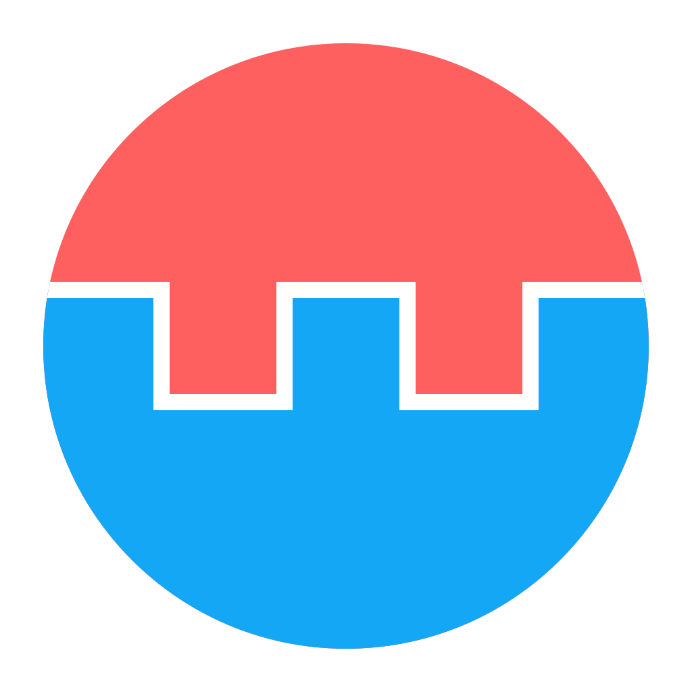

01
文件
只用一族蓝：浅蓝做图标，深蓝做主按钮；不铺底、不做双色装饰
everythingabout.me /drive
1280 × 760
全部文件
6 个目录 · 4 个文件 · 12.4 MB
Photos
2 小时前
Documents
3 天前
Projects
1 天前
照片备份
5 天前
2024-05-西湖.jpg
4.2 MB
2 小时前
年度总结.pdf
1.8 MB
3 天前
archive-2025.zip
6.4 MB
2026-09-12
notes.md
12 KB
5 天前
主按钮从黑换成 logo 蓝
上传、继续、保存都用同一个 #13A7F5；不再出现大块黑色。深色模式自动换成亮蓝 + 深字。
图标统一浅蓝底
所有 glyph 用同一块浅蓝底 + 同一个深蓝线，只靠形状区分文件夹、图片、PDF、压缩包；仍然不按类型上色。
珊瑚只留在 logo
界面里不出现珊瑚红；删除 / 移除密码才用低饱和砖红 #B4483F。蓝只做功能色，不做底纹、不做边框。
02
登录 / 账户
卡片只差温度和留白；主按钮同样是 logo 蓝
everythingabout.me /login
1280 × 900
Everything About Me
Sign in
登录 / 注册
用邮箱验证码进入你的个人数据基座。
everythingabout.me /account
1280 × 900
Everything About Me
账户
邮箱就是你的唯一标识；默认用验证码登录，密码可选。
修改邮箱
需要同时验证当前邮箱和新邮箱，两个验证码都填对才会生效。
登录密码（可选）
已设置密码，可以用密码登录；也可以移除，只保留邮箱验证码。
登录页的按钮也是 logo 蓝
没有彩色 eyebrow、没有渐变、没有大色块。输入焦点用一层很淡的浅蓝光圈；蓝色只出现在主按钮和图标上。
账户页的红色只给「移除密码」
保存、修改都是 logo 蓝；只有不可逆的移除用低饱和砖红。它不承担品牌表达，只承担警告。
A 与 B 的差别只在温度
A：冷白、紧凑、面包屑；最接近现在的网站。B：暖白、更松、标题升一级；蓝色系统与 A 完全一样。
03
颜色预算
浅蓝只做图标，深蓝只做主动作；珊瑚不出界面
常驻 · 1

logo珊瑚和天蓝只在标记里相遇。界面里不出现珊瑚红，也不会拿 logo 做底纹。
功能 · 2
上传
浅蓝只做图标底，深蓝只做主动作；不做渐变，也不铺满整个界面。
不可逆 · 3
删除、移除密码用低饱和砖红；主按钮不用红，也不拿红色或第二种蓝做装饰。
纸
面
浅蓝
logo 蓝
墨
删除红